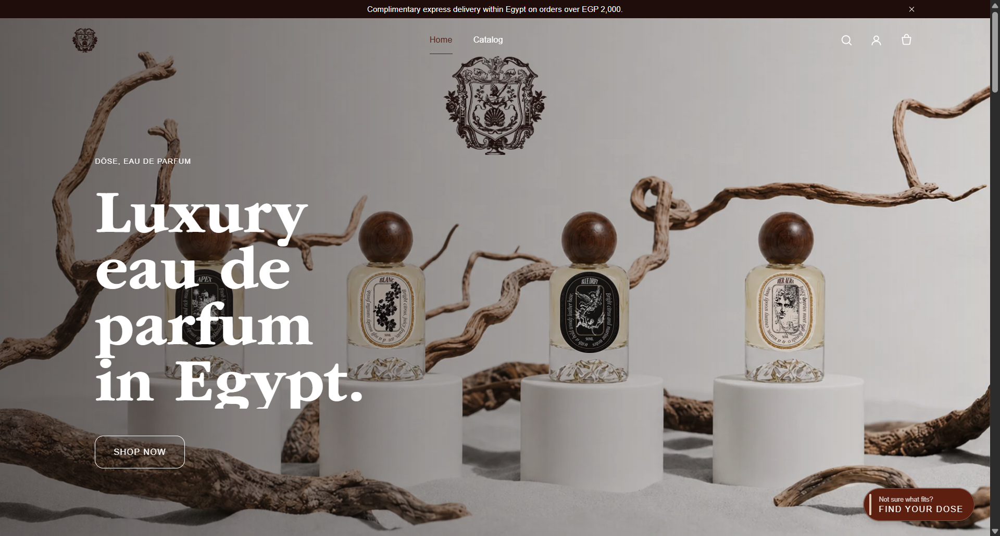
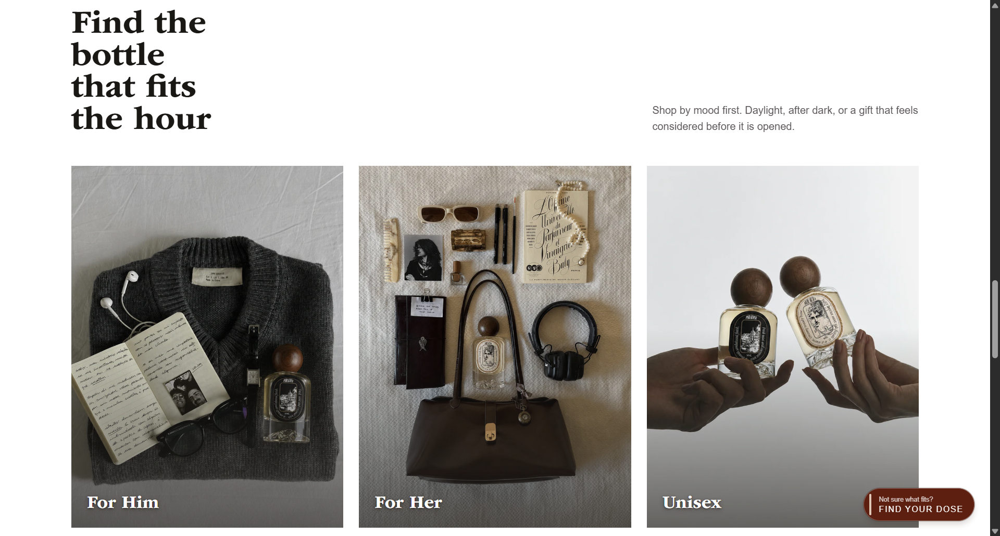
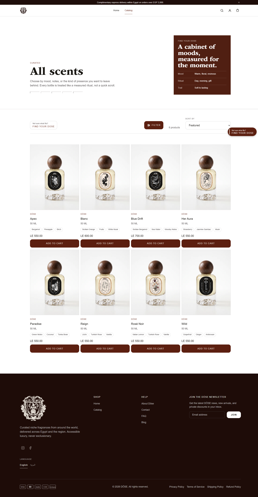

Selected work / Case study 03
DÖSE — selling scent through a screen.
A premium Shopify experience for an Egyptian niche fragrance brand: visual storytelling that carries what the customer can't smell, a guided "Find Your DÖSE" discovery flow, and the conversion mechanics — cart, discounts, SEO — engineered underneath.
DÖSE is an Egyptian niche fragrance brand competing in a category where the product's most important quality — its scent — cannot pass through the screen. Everything the store communicates has to be carried by imagery, language, pacing, and trust.
- Niche fragrance sells on identity and story; a generic Shopify theme undermines both.
- Undecided visitors leave: without guidance, choosing a fragrance online is a gamble customers avoid.
- Organic discovery mattered — the brand needed search engines to understand its catalogue properly.
"Will I like it?" is the question every fragrance customer is silently asking. The experience has to replace the counter test: describe scent in evocative but concrete language, situate each fragrance in a mood and moment, and guide the undecided instead of presenting a wall of bottles.
- Shopify's theme architecture — premium feel within Liquid's rendering model and the platform's checkout boundaries.
- Performance: rich visuals could not cost the mobile experience, where most traffic lives.
- The brand team needed to manage products and campaigns without a developer in the loop.
I owned the digital experience: brand direction for the store, the product page and discovery UX, and the Shopify implementation — Liquid templates, cart and discount logic, structured data, and performance work.
Two paths, deliberately designed: customers who know get a fast, confident route to product and checkout; customers who don't get "Find Your DÖSE" — a short, sensory quiz that narrows the catalogue to a personal recommendation. The store's job is to make sure nobody leaves because they couldn't decide.
"Find Your DÖSE" — replacing the fragrance counter with a conversation.
- Product pages as stories — scent pyramid, mood framing, and imagery sequenced before specifications and price anxiety.
- Cart designed for momentum — clear discount states, no surprise costs, and a short path to Shopify's checkout.
- Discovery quiz mapped to product metadata — recommendations come from structured attributes the brand team can edit, not hardcoded rules.
The visual direction leans into stillness: large imagery, disciplined typography, and restrained motion — closer to editorial perfume photography than to a discount storefront. Language does the heavy lifting, describing scent in scenes and moments rather than ingredient lists alone.
The store



- Custom Liquid theme work — sections the brand team can rearrange and edit safely from the Shopify admin.
- Cart & discount logic — predictable price display across promotions, bundles, and codes.
- SEO & structured data — product schema, clean metadata, and crawlable category structure so search engines understand the catalogue.
- Performance passes — image optimisation and lean scripts to keep the premium feel fast on mobile.
Atmosphere vs. speed. Every atmospheric image and motion flourish costs milliseconds. The discipline was treating performance as part of the brand — a premium store that stutters isn't premium.
Platform boundaries. Shopify draws hard lines around checkout. Rather than fighting the platform, the design spends its ambition where the platform is flexible — storytelling, discovery, and the cart — and keeps checkout native and trusted.
Qualitative outcomes — no invented figures:
A brand-true storeThe digital experience now matches the ambition of the product it sells.
Guided discoveryUndecided visitors have a designed path to a confident choice instead of a bounce.
Search-ready catalogueStructured data and clean information architecture make products legible to search engines.
E-commerce for sensory products is a writing and sequencing problem as much as a design problem. The quiz taught the broader lesson: when customers struggle to choose, don't add more information — add a conversation that narrows it.